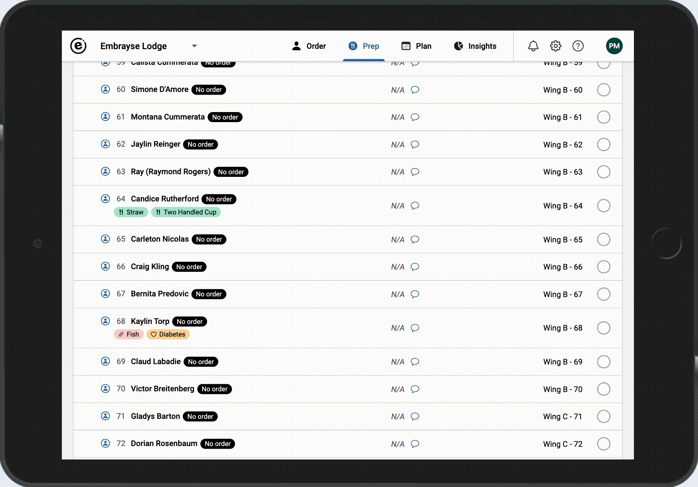
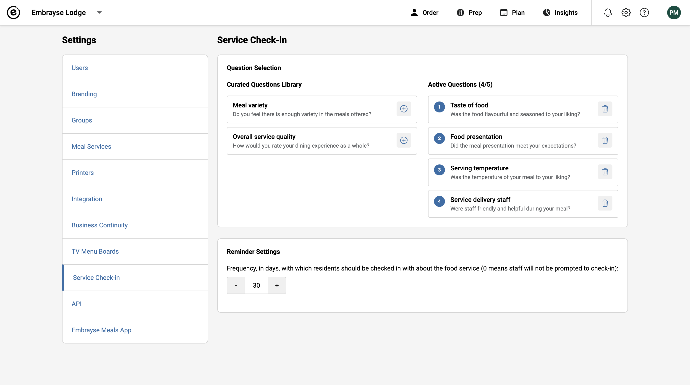
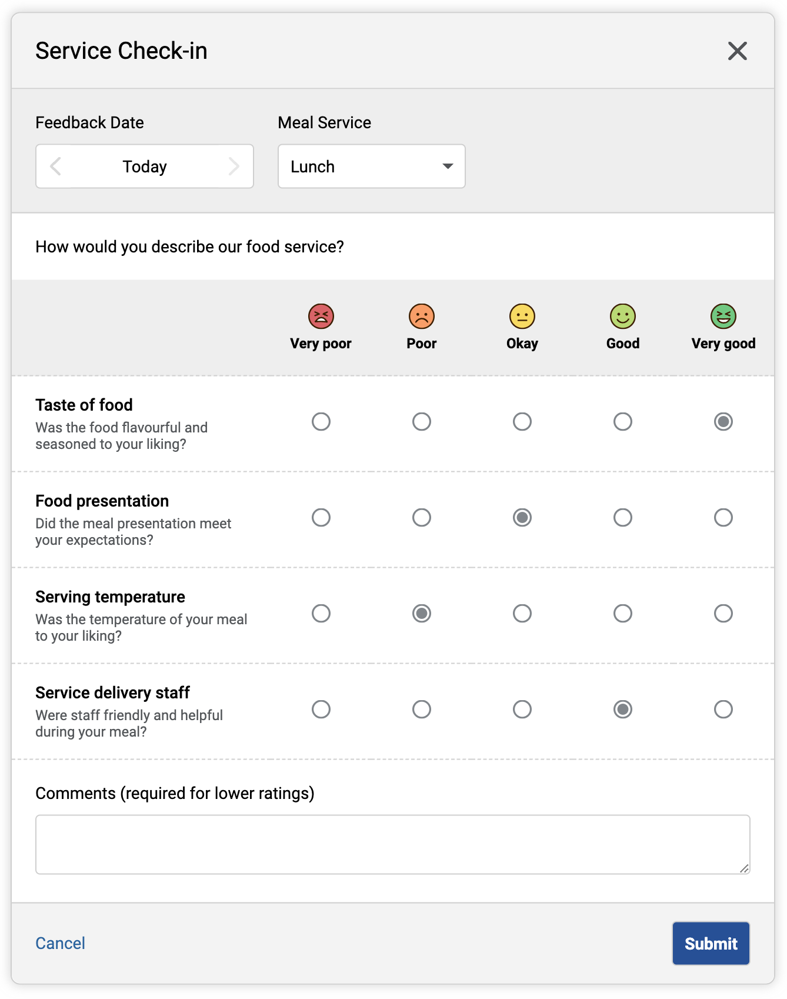
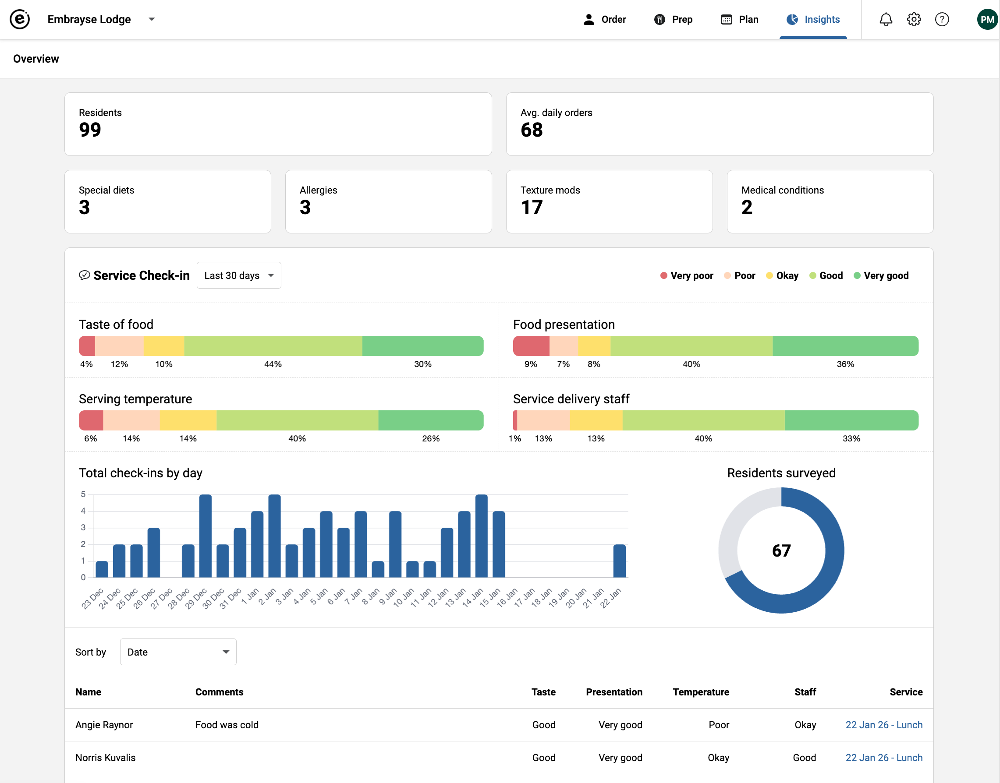
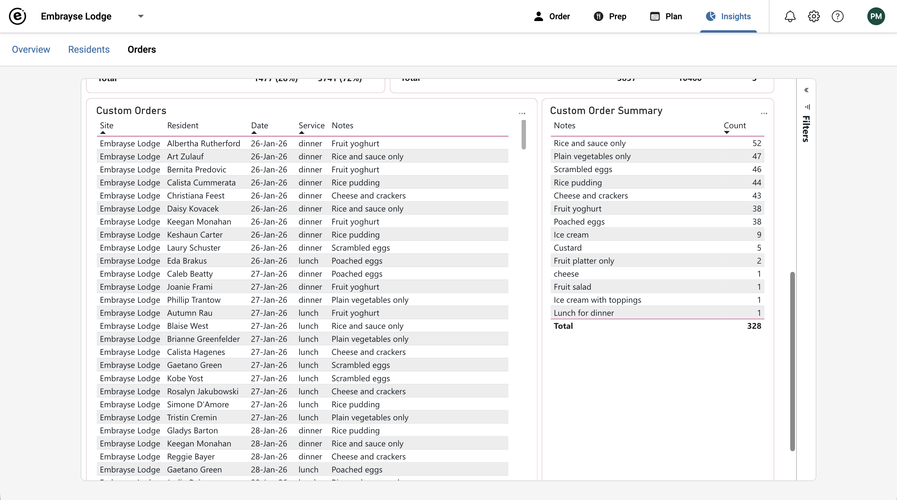

Release 2026.1 – Order at Service, Enhanced Service Check-ins, and Custom Order Reports
This release brings service-time ordering to kitchen operations, significant improvements to how you collect and analyse resident feedback, and new reporting tools to help understand custom order patterns.
Order at Service
The Prep Report now updates in real-time, opening up the possibility of collecting orders at the point of service and having the kitchen see them right away. Instant order visibility: when an order is placed or modified, it immediately appears on the Prep Report without the need to refresh the page. New order badges: newly placed orders display a "New" badge for 30 minutes, making it easy to spot incoming orders at a glance. Synchronised delivery status: delivery checkmarks and notes automatically update across all devices viewing the Prep Report, ensuring everyone stays on the same page.

Enhanced Service Check-ins
We've made significant improvements to how you collect and analyse resident feedback through Service Check-ins. You can now choose up to 5 questions from 6 available options, including Taste, Variety, Staff Delivery, Overall Quality, Temperature, and Presentation, and reorder them by priority. For multi-site providers, Service Check-in questions are shared across all sites and can only be modified by a super admin. Users can specify the date and meal service for feedback, and when a "Poor" or "Very Poor" rating is selected, a comment is now required. The Insights page includes two new charts: one showing check-ins distributed across 30 days, and another showing the number of residents surveyed, so you can confirm your sample is representative.



Custom ("Other") Order Reports
Two new reports help you understand custom orders (i.e. meals that are named "Other" or similar) more effectively. A details report lists individual custom orders with date, service, resident name, and request details, with filtering to drill into the data. A summary report identifies which custom orders are requested most frequently, so staff can review patterns and decide whether popular items warrant a menu addition or if process changes are needed.

Other Improvements and Bug Fixes
- Security improvements.
- Database upgrade for improved performance and security.
- Fixed: Changing a meal photo causes a "Not found" error.
- Fixed: In some instances logins fail intermittently.
- Fixed: Success and error "toast" messages occasionally display in the wrong position on screen.
- Fixed: Rapidly changing the date on the Plan screen could cause the wrong menu to display.
Want to see Embrayse in action?